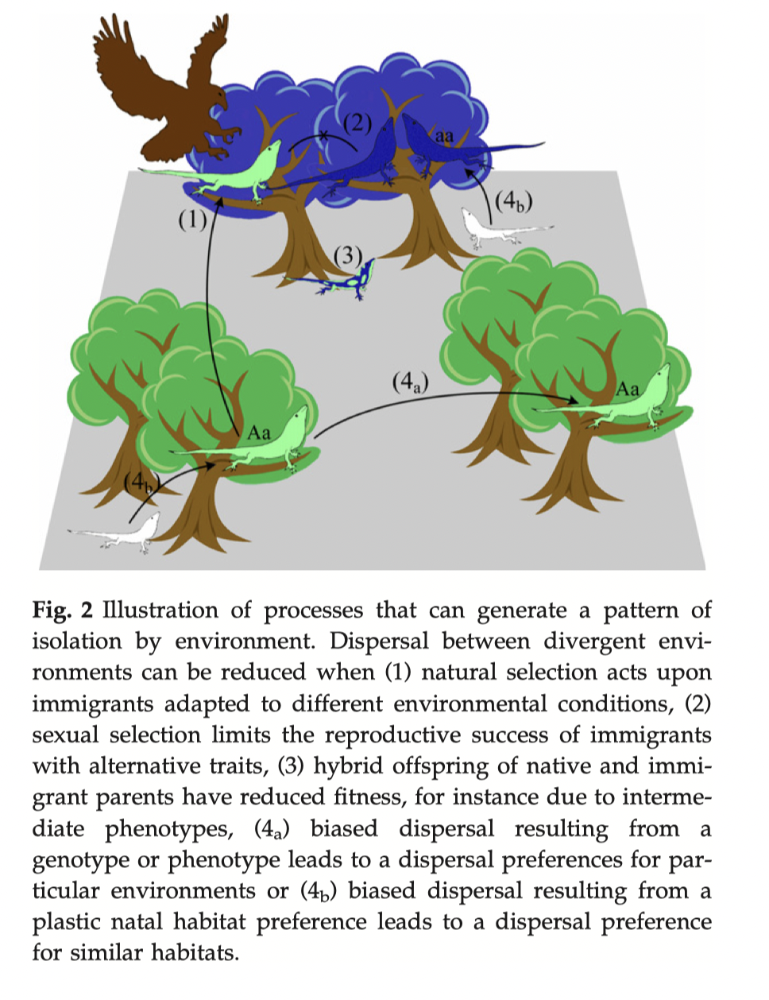
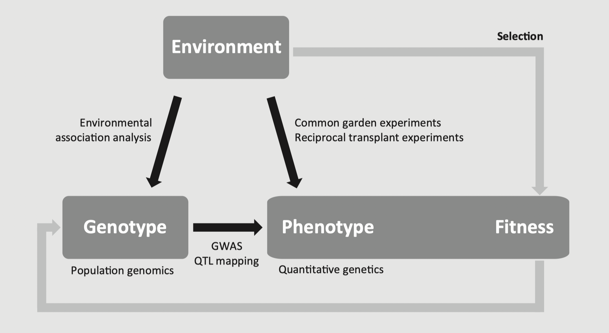

Land, river, & seascape genomics
What is landscape genomics?
(landscape = any habitat)
“At the heart of spatial and space–time analysis of population genetics is the connection between observed spatial patterns and the space–time processes that generate them.” - Epperson 2003
“the interaction between landscape features and microevolutionary processes, such as gene flow, genetic drift and selection.” - Manel et al 2003
Landscape genetics tests the model that \(G \sim f(E)\) - Dyer 2015, Molecular Ecology
Is landscape genomics fundamentally different from landscape genetics?
No, just swap “genetics” for “genomics” - Balkenhol et al 2016
Yes - “Whereas landscape genetics studies primarily focus on testing the effects of landscape variables on gene flow and genetic population structure, landscape genomics studies focus on detecting candidate genes under selection that indicate possible local adaptation.” - Storfer et al 2018
In this course, we will focus on a few topics in landscape genomics aiming to give you a solid foundation in the field. We will not be comprehensive but will try to point out important topics when we encounter them. There is a stronger emphasis on population genomics and various landscapes (especially marine) than might be found in other landscape genomic courses.
What are we covering and why?
Making maps and using spatial data
Describing genetic variation and genetic structuring
RDA as a flexible tool
Simulations and demographic analyses
Resistance surfaces
Projecting into the future with generalised dissimilarity modelling, gradient forests
Biophysical models of dispersal
More GEAs and genomic offsets
(Time permitting) Landscape genomics and genetic architectures
Some important topics we will not cover very much/at all
Sampling design
Tests of selection
Activity 1
Make a poster of your study system - no one will be judged for their artistry.
Your poster needs to include information on your organism and your landscape.
What are the important spatial aspects of your landscape?
Are there critical genomic elements to your study?
What is the overarching question or hypothesis
(Don’t forget to add your name!)
Unifying elements of landscape genomics
Fundamentally there are three main steps to any landscape genetic/genomic study:
Describe spatial variability
Describe genetic variability
Use statistics to look for correlations between spatial and genetic attributes.
(Recommended by rarely done - independent corroboration/validation)
(Optional - very popular recently, predict adaptive matching to future environments, genomic offsets)
Spatial variable attributes
(that often violate statistical assumptions)
Other factors to consider -
- What is the grain size of your spatial variables?
- Are spatial variables site specific or gridded (remote sensing)
Activity 2
Consider three basic habitat types: terrestrial, marine, freshwater
What spatial factors affect dispersal, either blocking or facilitating?
What spatial factors affect population sizes?
What environmental factors are likely to have been important agents of selection within species’ ranges over evolutionary time?
Under historical conditions, what is the time frame of the above spatial factors? (thousands of years, tens of years, months, days…)
How have human activities modified any of the above factors?
(For all of these questions you might decide to break their effects down by different taxonomic groups)
Further reading on this topic for aquatic habitats:
Blanchet, S., Prunier, J. G., Paz-Vinas, I., Saint-Pe, K., Rey, O., Raffard, A., Mathieu-Begne, E., Loot, G., Fourtune, L., & Dubut, V. (2020). A river runs through it: The causes, consequences, and management of intraspecific diversity in river networks. Evolutionary Applications, 13(6), 1195-1213. doi:10.1111/eva.12941
Grummer, J. A., Beheregaray, L. B., Bernatchez, L., Hand, B. K., Luikart, G., Narum, S. R., & Taylor, E. B. (2019). Aquatic landscape genomics and environmental effects on genetic variation. Trends in Ecology and Evolution, 1-14. doi:10.1016/j.tree.2019.02.013
Riginos, C., & Liggins, L. (2013). Seascape genetics: populations, individuals, and genes marooned and adrift. Geography Compass, 7(3), 197-216. doi:papers3://publication/doi/10.1111/gec3.12032
Selkoe, K. A., Henzler, C. M., & Gaines, S. D. (2008). Seascape genetics and the spatial ecology of marine populations. Fish and Fisheries, 9(4), 363-377. doi:papers3://publication/doi/10.1111/j.1467-2979.2008.00300.x
Describing relationships between sampling sites
Relationship of LG to landscape ecology
Many of the methods used in landscape genetics/genomics have their origins in spatial (landscape) ecology.
Methods papers and supporting documentation for analyses are likely to have species as the unit of inference - usually you can replace “species” with “loci”
Also, get used to thinking about genetic diversity in terms of alpha and beta diversity
Methodological inspirations for landscape genomics often come from landscape genetics, especially for describing spatial structure
Tools borrowed from landscape ecology help move between different types of data and analyses
Alpha and beta diversity:
Statistical models for representing relationships among and between locations:

GEAs: Genotype-by-environment associations
( = environmental associations)
- Genome-wide: related to demographic history, ecological speciation/diversification, isolation by environment


Tutorial on RDAs, GDM, and GF mostly sit in this category.
- Finding loci contribute to heritable genetic variation of selected traits

There is a huge literature on the topic of finding candidate loci for environmental selection that we cannot cover in one week. Population genetic tests of selection such as outlier tests or genomic scans are frequently used. There are also tests of selection that specifically look for associations of individual loci to environmental attributes - often called GEA, genotype-environment association or EAA, environment association analysis - this will be more of our focus given that we are studying landscape genomics. We will come back to this topic on Friday. (Rellstab et al. 2015 and Storfer et al 2018 have good reviews of the various methods if you are looking for further reading on this topic.)
Sampling strategies and goals
Key questions:
- Is your study exploratory or testing specific hypotheses?
Exploratory
Try to sample across the landscape
Random
Stratified random (break up spatial correlations among environmental variables)
Across “hotspots” of environmental turnover
Hypothesis testing
Interested in one environmental variable?
- Pairs or gradients (but look at co-varying environmental factors)
Candidate loci have been independently identified?
- What is the relevant environmental variable and can you design sampling to break up correlations with other variables?
(In reality, most landscape genomic studies sample opportunistically)
Ubiquitous problems in LG
- methods are biased to find few genes of large effect and yet most traits are likely polygenic
- outlier methods are biased to find false positives when there is underlying population structure
- collinearity of environmental variables makes moving from association to causation impossible
A more detailed workflow:
Activity 3
Update your poster in light of the class discussions.
Is your study exploratory or hypothesis testing?
Could you modify your study design to align to your goals?
References from tutorial
Balkenhol, N., Dudaniec, R. Y., Krutovsky, K. V., Johnson, J. S., Cairns, D. M., Segelbacher, G., Selkoe, K. A., von der Heyden, S., Wang, I. J., Selmoni, O., & Joost, S. (2016). Landscape Genomics: Understanding Relationships Between Environmental Heterogeneity and Genomic Characteristics of Populations. In Population Genomics (Vol. 54, pp. 261-322). Cham: Springer International Publishing.
Dyer, R. J. (2015). Is there such a thing as landscape genetics? Molecular Ecology, 24(14), 3518-3528.
Epperson, B.K. (2003) Geographical Genetics, Princeton University Press as origin of landscape genetics
Manel, S., Schwartz, M. K., Luikart, G., & Taberlet, P. (2003). Landscape genetics: combining landscape ecology and population genetics. Trends in ecology & evolution, 18(4), 189-197.
Rellstab, C., Gugerli, F., Eckert, A. J., Hancock, A. M., & Holderegger, R. (2015). A practical guide to environmental association analysis in landscape genomics. Molecular Ecology, 24(17), 4348-4370.
Storfer, A., Patton, A., & Fraik, A. K. (2018). Navigating the interface between landscape genetics and landscape genomics. Front Genet, 9, 68.
Wagner, H. H., & Fortin, P. D. M.-J. (2016). Basics of spatial data analysis: linking landscape and genetic data for landscape genetic studies. In N. Balkenhol, S. A. Cushman, A. Storfer, & L. P. Waits (Eds.), Landscape Genetics: Concepts, Methods, Applications (pp. 1-22): John Wiley & Sons, Ltd.